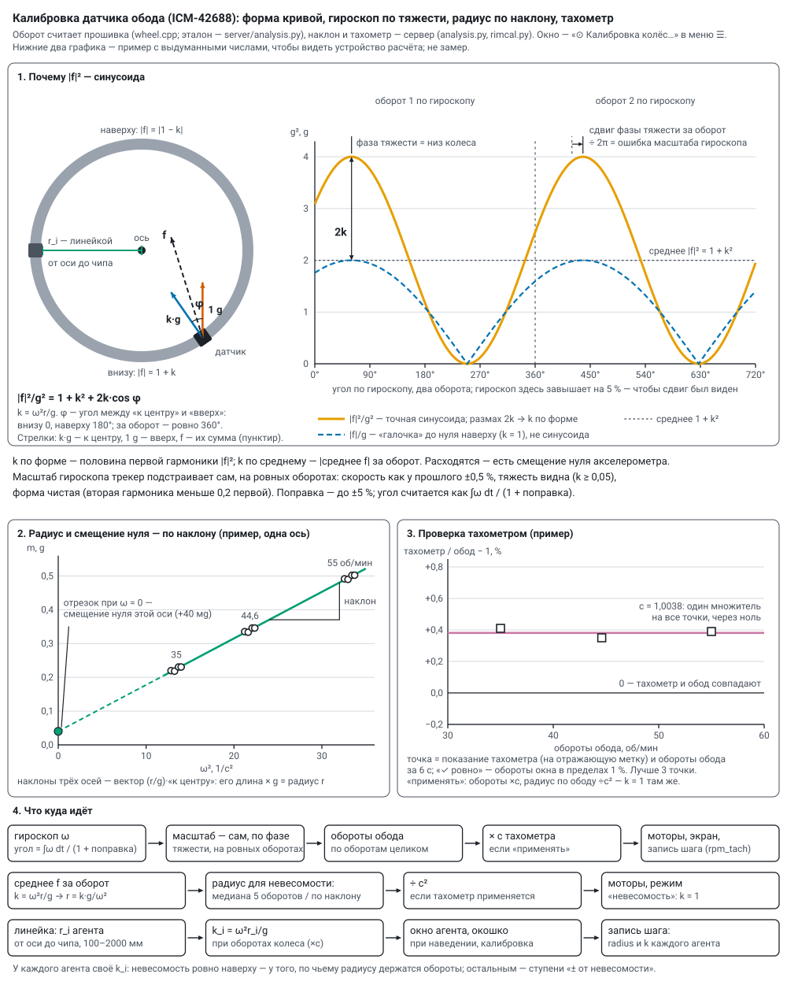

Датчики, телефон, моторы и катушки
Код для датчиков — общий, в библиотеке firmware/libraries/agent_sensors. Алгоритм колеса (обороты, невесомость, форма кривой) работает в прошивке (wheel.cpp) и строка в строку на Python (server/analysis.py), где его проверяют на синтетических данных (python tools/test_analysis.py); менять — в обоих местах. Статические акселерометры ничего не считают сами: шлют оси, считает сервер — static_watch.md. Подключение датчиков, колёс, катушек и моторов — wiring.md.
Все датчики — на I²C агента: D4 — SDA, D5 — SCL, питание 3V3 и GND. Прошивка при старте сама ищет, что подключено, и сообщает в телеметрии адрес датчика, его код (ICM-42688 отвечает 0x47) и режимы, прочитанные обратно из регистров, а не те, что хотели записать.
Датчик обода: ICM-42688#
Ищется на адресах 0x68 и 0x69. Настройки: ±16 g (на 2 об/с внизу 8,25 g), ±2000 °/с (2 об/с = 720 °/с), выдача 200 Гц, полоса 40 Гц, режим малого шума. Читает своя задача на ядре связи с низким приоритетом — ядро счёта и протокол группы не задерживаются.
Что считается за оборот (WheelTracker):
| величина | как |
|---|---|
| ось колеса | направление сглаженного вектора гироскопа в осях датчика: как плата лежит в трубке, знать не нужно |
| обороты | угол вокруг оси, ∫ω dt / (1 + поправка масштаба гироскопа); полный оборот — 2π |
| k = ω²r/g | модуль среднего ускорения за оборот: тяжесть за оборот усредняется в ноль, остаётся центростремительное. k = 1 — невесомость в верхней точке |
| |f| вверху и внизу | наименьшее и наибольшее за оборот; при k = 1 — около 0 и около 2 g |
| радиус | r = k·g/ω² по измерению; радиус из настроек («радиус датчика вращения», 450 мм) — для сверки и пока замера нет |
| форма кривой | k по форме, фаза тяжести, поправка гироскопа, вторая гармоника, среднее по осям — «Калибровка» ниже |
| оси колеса | «к центру», «по ходу», «вдоль оси»; вдоль оси должно быть около нуля, остальное — биение и вибрация |
Невесомость при r = 450 мм — 44,6 об/мин; «окрестность» на экране — k в пределах ±5 % (43,5–45,7 об/мин).
Пакеты — раз в период телеметрии, из одного снимка:
imu— обороты с прошлого раза (до 6), скорость сейчас, оси колеса, 20 показаний в осях колеса (20 Гц);imr— те же 20 моментов сырыми отсчётами датчика (ускорение и гироскоп), для записи;imc— форма кривой тех же оборотов: k по форме, постоянная часть |f|², фаза тяжести, остаток ошибки гироскопа, поправка масштаба, вторая гармоника, среднее ускорение по осям датчика, ровный ли оборот. Сервер сводит его с оборотамиimuпо времени агента.
Калибровка датчика обода#


Окно «⊙ Калибровка колёс…» — в меню ☰ (кнопка есть и в «⟳ Моторы вручную…», а «📏 задать…» — в окне агента). По каждому колесу в нём три части и радиусы агентов. Прошивка без пакета imc — «◐ прошивка без формы кривой — обновить по воздуху».
1. Форма кривой и масштаб гироскопа. |f| за оборот — не синусоида (при k = 1 — «галочка» до нуля наверху), но квадрат — точная синусоида по углу тяжести φ в осях датчика: |f|²/g² = 1 + k² + 2k·cos φ. За оборот |f|² раскладывается по углу гироскопа (вес — пройденный угол, поэтому разгон внутри оборота не мешает):
- k по форме — половина первой гармоники; постоянная часть должна быть 1 + k² (масштаб акселерометра). k по форме и k по среднему не обязаны совпасть: смещение нуля акселерометра входит в них по-разному.
- Вторая гармоника к первой — у ровного колеса около 0, растёт от биения, рывков, смещения датчика: меньше 0,05 — «✓ форма чистая», до 0,2 — «◐ колесо бьёт», больше — «✗ форма грязная».
- Фаза тяжести. Тяжесть делает ровно один оборот за оборот колеса, поэтому её сдвиг от оборота к обороту, делённый на 2π, — ошибка масштаба гироскопа. Трекер подстраивает масштаб сам, на ровных оборотах: скорость как у прошлого ±0,5 %, тяжесть видна (k ≥ 0,05), вторая гармоника меньше 0,2. За ровный оборот берётся 0,2 найденной ошибки; поправка — не больше ±5 %. С верной поправкой обороты верны и тяжесть за оборот усредняется в ноль (при ошибке 1,5 % в среднем осталось бы около 15 мg — радиус и смещение нуля не найти). Окно показывает поправку и что осталось — медиану и разброс по последним 30 ровным оборотам (нужно хотя бы 5).
2. Радиус и смещение нуля — по наклону. Среднее ускорение за оборот в осях датчика m = (ω²r/g)·«к центру» + b. По каждой оси — прямая по ω²: наклоны трёх осей — вектор (r/g)·«к центру», его длина × g — радиус; отрезки — смещение нуля b, мg; разброс около прямой — тоже мg. Берутся обороты последних 30 мин — ровные, с сошедшейся подстройкой (остаток меньше 0,2 %), не меньше 6, на 2–3 скоростях с разбросом хотя бы ±15 % (например 35 · 44,6 · 55 об/мин). Окно сравнивает этот радиус с радиусом линейкой.
Переключатель «радиус для невесомости»: «медиана оборотов» — медиана r = k·g/ω² последних 5 оборотов (не старше 15 с; смещение нуля входит в радиус) или «по наклону — без смещения нуля» — радиус по наклону, среднее по датчикам обода колеса. Этот радиус берут моторы в режиме «невесомость»; замера нет — радиус из настроек.
3. Тахометр — независимая проверка: оптический, на отражающую метку. Колесо — на ровных оборотах, тахометр — на метку, показание — в поле «тахометр» → «записать точку». К нему сервер берёт средние обороты обода за последние 6 с — по оборотам целиком, без поправки тахометра; «✓ ровно — можно записывать», когда обороты окна расходятся не больше чем на 1 % и скорость сейчас та же ±0,5 %. Поправка — один множитель через ноль: c = Σ тахометр·обод / Σ обод² (тахометр = c · обод) и разброс точек около него, %. До 40 точек, 1–300 об/мин; лучше 3 на разных скоростях. «Применять: моторы и показ ×c» — обороты колеса для моторов, экрана и записи шага умножаются на c, а радиус по ободу делится на c² (он посчитан по ω гироскопа: r = k·g/ω²), и невесомость остаётся там же, где k = 1. Без точек «применять» не включается; «очистить точки» выключает и поправку.
Радиусы агентов — линейкой, от оси до чипа каждого агента колеса, 100–2000 мм («сохранить радиусы» в окне калибровки). У каждого агента своё k_i = ω²r_i/g при оборотах колеса сейчас (с поправкой тахометра, если она применяется): в окне калибровки, в окне агента («радиус … мм линейкой · k = …»), в окошке при наведении и в записи каждого шага (radius и k — по средним оборотам опыта; с поправкой — ещё rpm_tach). k в пределах ±1 % от 1 — «✓ невесомость наверху», иначе «недобор» или «перебор». Невесомость ровно наверху — у того, по чьему радиусу держатся обороты; остальным — ступени «± от невесомости» в эксперименте (modes.md).
Где лежит: точки тахометра и переключатели — data/rim_cal.json; радиусы агентов (с историей изменений) — data/rig.json. API: GET /api/rimcal — всё окно; POST /api/rimcal — {wheel, tach} (точка), {wheel, del: i}, {wheel, clear}, {wheel, tach_on, fit_on}; POST /api/rig — {radius: {mac: мм}}.
Проверка на синтетике (python tools/test_analysis.py, колесо r = 450 мм):
| случай | что нашлось |
|---|---|
| разгон 30 → 60 об/мин, приборы исправны, датчик повёрнут случайно | k на невесомости 1,004 (правда 1,002), радиус 450,7 мм, |f| вверху 0,006 g, ось колеса — точно |
| ровно 44,6 об/мин | k по среднему 1,0006, по форме 1,0004 (правда 1,0010), вторая гармоника 0,0006 |
| гироскоп +1,5 %, смещение нуля (20, −15, 10) мg, ступени 30 · 38 · 44,6 · 52 об/мин, вперёд и назад | поправка гироскопа +1,44 и +1,47 %, остаток 0; обороты на невесомости — ошибка 0,005 %; радиус по наклону 450,6 и 450,1 мм; смещение нуля — в пределах 1,3 мg по каждой оси |
| неровное колесо: то же плюс шум 20 мg, вибрация 23 и 61 Гц по 50 мg, пульсация скорости ±0,3 %, блуждание ±0,1 % | поправка +1,51 %, обороты — ошибка 0,22 %, радиус 450,5 мм, смещение нуля — в пределах 1,4 мg, разброс около прямой 3,1 мg |
Магнитное поле: MLX90393#
Ищется на адресах 0x0C–0x13 и 0x18–0x1B. 20 измерений в секунду. Ток катушки заранее неизвестен, поэтому усиление подбирается само: показание подошло к краю диапазона — усиление ниже, слишком мало — выше. Поле всегда в микротеслах по таблице чувствительности текущего усиления (от 0,15 мкТл на отсчёт при пределе около ±5 мТл до 0,75 мкТл при пределе около ±50 мТл).
Внутри обмотки тороида поле катушки направлено вдоль трубки: у агента №20 в трубке колеса 1 — 1,20–1,26 мТл при токе около 0,9 А (coil_test.md). Поле Земли (около 50 мкТл) вращается в осях агента раз за оборот. В разрывах обмотки поле слабее и разворачивается; насколько оно неоднородно внутри трубки и сколько выходит наружу — расчёт поле тороида.
Пакет mag: среднее за период по осям, модуль (среднее, наименьшее, наибольшее), усиление, 20 отдельных замеров.
Статический акселерометр (роль S той же прошивки)#
Агент в роли S только меряет и шлёт оси x, y, z 500 раз в секунду; спектр, эталон шума, тревоги и вывод «продолжать / повторить / проверить» считает сервер — static_watch.md.
- ICM-42688 неподвижно: 1000 Гц через FIFO, среднее по 2.
- ADXL355 (адрес 0x1D — ASEL на GND, или 0x53) — точный акселерометр, шум по паспорту 25 мкg/√Гц (у ICM-42688 — 65–70). Есть на шине — роль S меряет им: ищется раньше ICM-42688, узнаётся по регистрам 0x00–0x02 = 0xAD, 0x1D, 0xED; шина 400 кГц. Предел ±2 g; выдача датчика — сразу 1000/avg Гц со своим фильтром (четверть частоты; avg 2 → 500 Гц); FIFO датчика на 32 тройки с меткой оси x, забирается раз в 10 мс; оси — 20 разрядов, в пакете сдвинуты в int16 (16000 на g, ступень 62,5 мкg — ниже шума). Регистры читаются обратно: FILTER 03, RANGE 01, POWER_CTL 00. Сервер узнаёт датчик по отсчётам на g (16000 / 8000 / 4000).
- Замер на одном столе: собственный шум ADXL355 15–20 мкg/√Гц против 61–80 у ICM-42688, точность среднего за 1 с — 0,014–0,017 мg против 0,06–0,10; одиночный отсчёт у обоих одинаков — его задаёт вибрация стола.
Телефон (приложение phone/, версия 1.1)#
Android-телефон №9 — ещё один статический детектор. Приложение «Колесо-2 датчики» (Kotlin, без сторонних библиотек) берёт только нужное установке:
- акселерометр без калибровки (система не подкручивает смещение нуля; на Galaxy A26 — ~500 Гц, ±8 g, ступень 0,0024 м/с² = 1/4096 g) — пакеты
accкак у статического агента (int16, 4096 на g): на сервере работают «вживую», эталон шума, тревоги; - магнитометр без калибровки, мкТл — пакеты
magсо своей частотой (hz), множителем (div= 100) и ступенью (step): «🧲 поле вживую» на основном экране; - фон в
tel(ph): сеть 50 Гц в поле (амплитуда по Гёрцелю за 2 с — видна, если магнитометр быстрее 105 Гц), колебания поля за 2 с, сигнал Wi-Fi и сотовой связи, батарея (заряд, температура, на зарядке ли).
Сырого радиоспектра Android приложениям не даёт — только силу сигнала, которую слышат радиомодули. На телефоне один экран: связь, акселерометр и магнитометр (значения, разброс за 1 с, размах за 10 с полосами x / y / z), фон.
С погашенным экраном. Меряет и отправляет служба переднего плана (тип health — датчики быстрее 200 Гц) со значком в шторке: процессор не засыпает (PARTIAL_WAKE_LOCK), Wi-Fi не уходит в экономный режим (WifiLock). Убитая системой служба поднимается снова, после перезагрузки телефона — сама (если не нажато «■ стоп»). Внизу экрана: «■ стоп / ▶ мерить», «☾ экран гаснет сам / ☀ не гаснет / ◐ притушен» (горящий экран — лишние наводки) и, пока не разрешено, «🔋 без ограничений»: без этого неподвижный телефон без зарядки Android в глубоком сне может отключить от сети. На Samsung ещё: Настройки → Приложения → «Колесо-2 датчики» → Батарея → «Без ограничений». Экран погашен 40 с (проверка по USB): акселерометр 500 Гц, пакеты каждую секунду, потерь нет.
Связь. Пакеты строками — в POST /api/ingest на порт 8090 сервера, пачками 4 раза в секунду; разбор тот же, что у UDP. Сначала телефон пробует кабель USB (сервер раз в 15 с делает adb reverse tcp:8090, если есть adb), иначе — Wi-Fi на адрес из маяка сервера; сменился адрес — берёт новый из маяка. Замеры поля несут номер первого и время по часам датчика (i0, mt0, mt1, ms): накопленное за обрыв связи сервер ставит на свои места, повторы отбрасывает; переполнение кольца поля — mlost в tel. Для сервера телефон — агент роли S с адресом вида 02:… (из ANDROID_ID), dev: "phone"; настройки агента ему не шлются. Версия — в fw (phone-1.1); при сборке поднимать versionName и BuildInfo.VERSION вместе. Сборка и установка:
cd phone; .\gradlew.bat assembleDebug C:\Android\Sdk\platform-tools\adb.exe install -r app\build\outputs\apk\debug\app-debug.apk
На основном экране#
- Колонка колеса — по датчику обода: обороты сейчас, сколько нужно для невесомости, «✓ невесомость наверху» / «◐ недобор, k …» / «◐ перебор, k …»; на рисунке — обороты с направлением внутри колеса.
- Окно агента с датчиком: «∿ вживую» (акселерометр: колебания, Гаусс, спектр), «🧲 поле вживую» (MLX90393 или телефон: |B| и оси, спектр, ступеньки поля), «шум и точность датчика», радиус линейкой и k.
- Статика — карточка под рисунком: вердикт, живые Гаусс, спектр и колебания выбранного датчика; подробно — окно «◆ статика подробно» (static_watch.md).
Проверка без плат#
python tools/sim_agents.py [секунд] --port 5015 — имитация в тех же форматах, что у прошивки: агент с ICM-42688 на колесе r = 450 мм (обороты ступенями 35 → 40 → 44,6 → 50 → 55 → 50 → 44,6 → 40 по 30 с, гироскоп врёт на +1,2 %, у акселерометра смещение нуля (12, −8, 15) мg — есть что калибровать), агент с MLX90393, три статических акселерометра с толчками, линией и сбоем по расписанию; --gens N — ещё генераторы, --mot — агент моторов и агенты катушек. Запускать с отдельным сервером — данные и команды не смешаются с настоящими:
python server/monitor.py --http 8091 --udp 5015 --data data/test/sim --no-beacon
Моторы колёс (роль M)#
Два щёточных мотора 36GP-555 (12 В, планетарный редуктор 112 об/мин, без энкодера) крутят колёса; агент моторов №10 — плата XIAO в роли M на неподвижной раме, два моста DRV8871: колесо 1 — D0, D1, колесо 2 — D2, D3 (схема — wiring.md). ШИМ 20 кГц, медленный спад; разгон и торможение плавные; направление меняется только через остановку и паузу 1 с; сторож — нет команды MOT 5 с, моторы плавно встают. Сервер (server/motors.py) раз в секунду шлёт MOT a=‰ b=‰ r=разгон w=сторож.
Окно «⟳ Моторы вручную…»: колёса по отдельности / вместе / навстречу / только 1 / только 2; режим колеса — стоит / ШИМ / обороты / невесомость (обороты, при которых k = ω²r/g = 1; радиус — по датчику обода, см. «Калибровка», замера нет — из настроек); смена направления по таймеру. В режимах «обороты» и «невесомость» ШИМ = прямая подача + ПИ по оборотам обода (с поправкой тахометра, если она применяется). «■ Всё стоп» останавливает и моторы. Назначить плату: окно агента → «→ в моторы». В эксперименте вращение задаётся на каждом опыте (modes.md, program.md); в конце программы моторы останавливаются.
- Обратная связь по оборотам включается, только когда обод показывает не меньше 60 % цели: на разгоне и при торможении перед сменой направления интегратор не копит ошибку (перерегулирование на синтетике 1–6 %); упёршись в предел ШИМ — тоже не копит.
- «✓ невесомость наверху» у моторов — по измеренному k (за оборот; с радиусом «по наклону» — по нему), а не по радиусу из настроек.
- Таймер смены направления («через N мин») отсчитывается от начала движения: заданный стоящему колесу, первую смену даст через N минут хода.
- Агенты моторов и катушек в «молчании» телеметрии не участвуют: сервер шлёт команды только тем, кого слышит, и разрыв связи дольше 10 с вывел бы их из управления.
- «Вперёд ▶» — по часовой стрелке, если смотреть на вал спереди; зеркальный мотор — поменять у него OUT1 / OUT2 (wiring.md).
Катушки колёс (роль M, место «катушка»)#
Агент катушки — та же прошивка в роли M, назначенная на место «катушка» своего колеса (окно агента → «катушка колеса 1 / 2»); колесо 1 — №13. Мост DRV8871 от 5,1 В, D0 → IN1, D1 → IN2, катушка на OUT1 / OUT2 — wiring.md. Сервер (server/coils.py) раз в секунду шлёт MOT a=±уровень b=0 r=5000 w=5: знак — направление поля, уровень 1000 — постоянный ток; смена знака — через остановку и паузу 1 с; нет команды 5 с — агент снимает ток. Агентов катушки на колесе может быть несколько — команда уходит каждому.
Поле задаёт опыт эксперимента (параметр «поле катушек», modes.md), вручную — кнопки «выкл / + / −» под колесом на схеме; на отдыхе, в конце программы, по «■ Всё стоп» и после перезапуска сервера — выкл. Агент катушки не входит в группы колеса, шаги и подгруппы: сервер и экран узнают его по месту, даже когда он молчит.
Поле по датчику. Магнитометр колеса раз в секунду присылает среднее поле. Секунды, когда катушка заведомо выключена и показания ровные, дают фон (Земля, железо рядом), секунды с «+» — направление поля катушки на месте датчика. Показания минус фон, спроецированные на «+», — поле со знаком: видно, есть ли поле, куда оно и совпадает ли с командой; в записи шага — coil_sense. Датчик сдвинули — фон и направление переучиваются за несколько секунд.
Переменное поле. Та же катушка, но ток меняет направление плавно: ∿ синус или ⊓ мягкий меандр (прямоугольник, фронты — полуволны синуса по 100 мс), частота 0,1–50 Гц. К команде добавляется fa= частота в мГц, ka= форма (0 синус, 1 меандр), ea= фронт в мс и qa= фаза по часам сервера в тысячных периода (постоянное — fa=0). Агент ведёт огибающую: амплитуда растёт и спадает со скоростью r, сервер ставит её так, чтобы полная амплитуда набиралась за 3 периода, от 1 до 5 с; смена рода (постоянное ↔ переменное, другая форма) — через ноль. Мост на переменном обновляется 1000 раз в секунду (20 точек на период при 50 Гц), ШИМ — те же 20 кГц. «+» и «−» — фаза 0 и 180°: до 5 Гц агент плавно подстраивает фазу под часы сервера, поэтому две катушки на «+» идут в одной фазе, «+ −» — в противофазе, с точностью до задержки сети (единицы мс); выше 5 Гц каждая идёт сама. В телеметрии моста — aca: [частота мГц, форма, фронт мс, фаза ‰, ошибка фазы против сервера ‰].
Почему не вредно и что учесть. Катушка — около 1 мГн при 5 Ом (оценка): постоянная времени ~0,2 мс, до ~100 Гц ток успевает за напряжением, запасено при 1 А ~0,5 мДж — мост это держит и при резком переключении; ограничивают ток и нагрев обмотки. Синус той же амплитуды греет обмотку и тратит аккумулятор вдвое меньше постоянного. Провода катушки дрожат на частоте поля и вдвое чаще (сила ~ ток²) — эти линии с гармониками сервер в опытах с переменным считает известными в спектре статики (static_watch.md). Магнитометр колеса меряет средним за секунду — переменное он видит размахом |B| внутри секунды (coil_sense.seen = «~», spread); фон и направление «+» на переменном не учатся. INA219 катушки на переменном показывает мгновенный ток, а не амплитуду. Прошивка без переменного поля команду не поймёт и пойдёт постоянным — сервер такой отказывает («обновите по Wi‑Fi»).
Задаётся слоем окна эксперимента ∿ род поля (постоянное, = 70 % · ШИМ, ∿ 0,5 / 1 / 5 / 17 Гц, ⊓ 1 Гц, своя частота или свой уровень) или вручную — кнопкой «∿» под колесом: род поля по кругу, знак — кнопками «+ / −».
Частоты. Не кратные 10 Гц: магнитометр обода меряет 20 раз в секунду — на 20 Гц (и 40) поле для него стоит на месте, на 10 Гц он попадает в одни и те же две точки периода; 50 Гц — ещё и сеть в спектре статики. Поэтому в наборе 17 Гц, а при своей частоте, кратной 10, окно предупреждает.
Контроль «= 70 % · ШИМ». На постоянном полном уровне мост просто открыт — переключений нет; на переменном он переключается 20 000 раз в секунду всё время. Фронты ШИМ могут дойти до высокоомных входов агентов (общая земля, ёмкость обмотки) — сравнение «переменное против постоянного» смешало бы действие поля и действие переключений. Постоянное на 70 % уровня: ШИМ есть, поле не меняется (и мощность та же, что у синуса полной амплитуды) — с ним видно, что от смены поля, а что от переключений. В шаге — coil.level (‰), без него — полный уровень.
Что поле делает с шумом агентов. Магнитометр обода (источник 🧲) видит поле напрямую: в трубке ~1,3–1,4 мТл — около 9000 отсчётов при самом чувствительном усилении (предел ±4,9 мТл по x, y, порог перехода на грубое — 28 000), усиление не переключается, обрезания нет. Шум датчика в младших битах тот же — с хешем качество чисел не меняется, но без хеша поле прямо меняет младшие биты (переменное работает как подмес): разница «поле есть / нет» у 🧲 — известная физика, контроль канала, а не аномалия. Нога D0 (источник ⏚ АЦП) поле почти не видит: наводка в её контуре даже на 50 Гц при полном поле — порядка 40 мкВ на 1 см² против ступени АЦП ~0,8 мВ; а вот фронты ШИМ 20 кГц она может увидеть (отсчётов ~21 000 в секунду — заворот около 1 кГц), отсюда контроль «= 70 % · ШИМ». Засчитываем мы ¼ бита на отсчёт АЦП и 2 бита на байт магнитометра — наводка шум не убирает, засчитанное остаётся честным.
⟳ С вращением. Синус частоты k × обороты колеса (×1, ×2, свой множитель 0,25–4): катушка крутится вместе с колесом, и поле оказывается привязано к положению в комнате. Фаза — по метке верха: агент обода раз в оборот находит верхнюю точку (|f| наименьший — там же невесомость) и шлёт top [мс назад, период мс, номер оборота] — в пакете imu, а в молчащих опытах (настройка rt, программа ставит её сама) — отдельным коротким пакетом раз в секунду. Сервер ставит максимум синуса на верх агента с акселерометром; поле в трубке одно на весь обод, поэтому у остальных агентов свой постоянный сдвиг: агент напротив проходит верх при минимуме (поле обратного знака), агенты сбоку — около нуля. До 5 Гц агент катушки держит фазу по метке; меток нет (колесо стоит, датчик молчит) — поле идёт прежней частотой без подстройки (на планшетке «◐ метки верха нет»). Колёса стоят — такой опыт в список не входит.
Излучает ли переменный ток. Почти нет. Длина волны на 50 Гц — 6000 км, на 1 Гц — 300 000 км, а катушка — метр: она не антенна, а «ближнее поле», которое спадает как 1/r³ и наружу не уходит. Оценка мощности излучения одного витка намотки вокруг кольца (1 А, площадь ~0,08 м²) на 50 Гц — около 10⁻²⁵ Вт, на 1 Гц — 10⁻³² Вт. Что реально выходит наружу — фронты ШИМ 20 кГц по проводам (как у любого драйвера мотора), отсюда контроль «= 70 % · ШИМ».